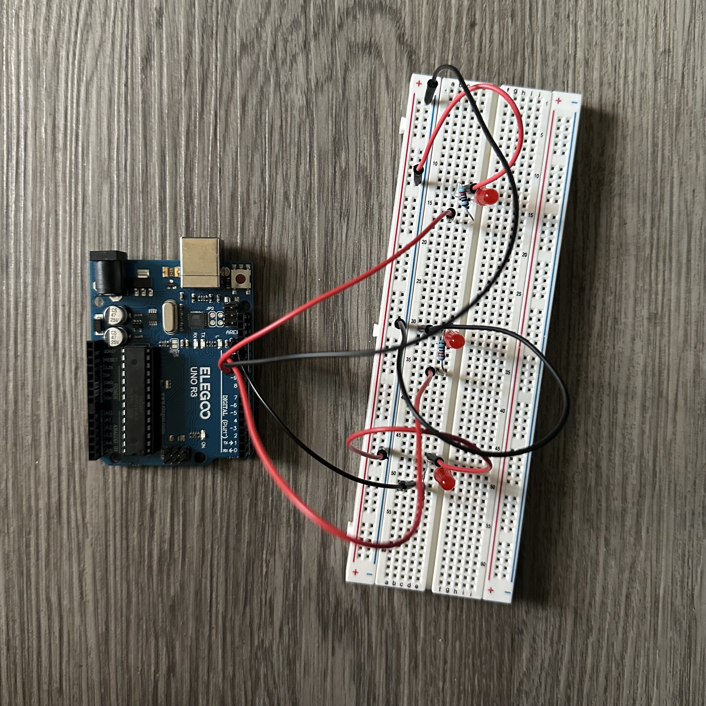
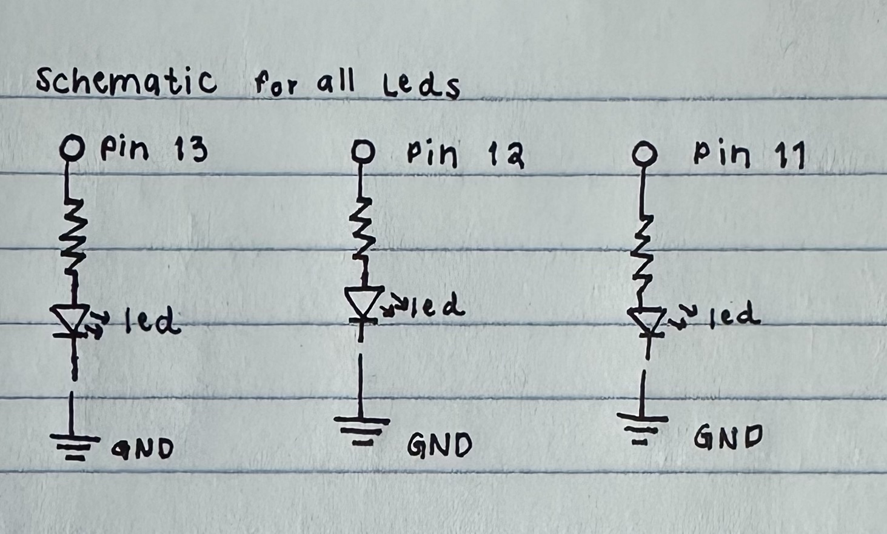
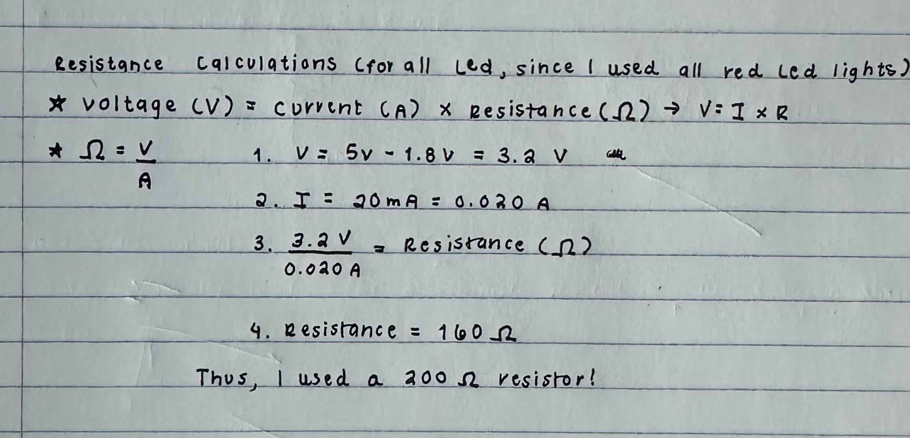
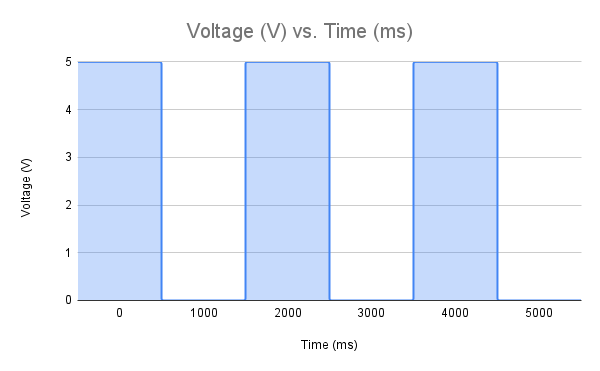

Blink Assignment
Introduction

For this Blink Assignment, I worked with the Arduino and circuit to make three
LEDs light on their own! As shown in the image above, this is my final presentation
of the layout for the circuit.
Schematic

I decided to draw the schematic diagram to help me visualize what will happen in the circuit.
As shown in the image, all LEDs share a common ground and have unique pin numbers as their
power sources. The schematic demonstrates the flow of the circuit for each
LED: Ground → LED → Resistor → Pin # (13, 12, and 11).
Calculations

Before starting the circuit,
I needed to calculate the required resistor value for all three LEDs
to ensure they would not burn out. Red LEDs typically have a voltage drop
of 1.8V. Since the supply of the voltage was 3.2V, and the recommended current was
0.02A, the resistance was calculated using Ohmn's law: R=V/I=3.2/0.02=160Ω. Based
on this, I chose a 220 Ω resistor, as it is the closest standard value to 160 Ω, ensuring
safe and reliable operation for the LEDs.
Code Structure
Here is the code used on the Arduino to successfully light up all LEDs independently:
// the setup function runs once when you press reset or power the board
void setup() {
// initialize digital pin LED_BUILTIN as an output.
pinMode(LED_BUILTIN, OUTPUT);
pinMode(12, OUTPUT);
pinMode(11, OUTPUT);
}
// the loop function runs over and over again forever
void loop() {
digitalWrite(LED_BUILTIN, HIGH); // turn the LED 1 on (HIGH is the voltage level)
delay(1000);
digitalWrite(12, HIGH); // turn the LED 2 on (HIGH is the voltage level)
delay(1000);
digitalWrite(11, HIGH); // turn the LED 3 on (HIGH is the voltage level)
delay(1000); // wait for a second
digitalWrite(LED_BUILTIN, LOW); // turn the LED 1 off by making the voltage LOW
delay(1000);
digitalWrite(12, LOW); // turn the LED 2 off by making the voltage LOW
delay(1000);
digitalWrite(11, LOW); // turn the LED 3 off by making the voltage LOW
delay(1000); // wait for a second
}
Let's See the Results!
Take a look at the circuit in action!
Additional Questions
1. Draw a graph where the X-axis is time, and the
Y-axis is voltage across the LEDs. Draw a line for each of your 3 LEDs.

2. How many LEDs could you blink independently
with your Arduino? How much current would that draw?
As we know, the Arduino Uno has 14 total pins. Each pin
can source up to 20 mA, but the total current for the board is
limited to 200 mA. This means that only 10 LEDs can be safely controlled at once.
3. How fast do you need to blink your LEDs
until you no longer notice they are blinking?
When I set the delay to 4 milliseconds, it became very
difficult to perceive the blinking.